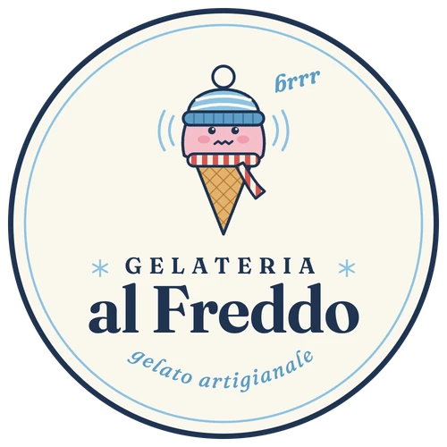

scorri e riempilo ↓
Il cono in 3D non si carica su questo dispositivo.
Fatto qui, ogni giorno.
E tanti altri gusti. E non solo.
Non solo gelato
La vaschetta, pronta quando passi.
Scegli misura e gusti: te la prepariamo.

scorri e riempilo ↓
Il cono in 3D non si carica su questo dispositivo.
E tanti altri gusti. E non solo.
Scegli misura e gusti: te la prepariamo.